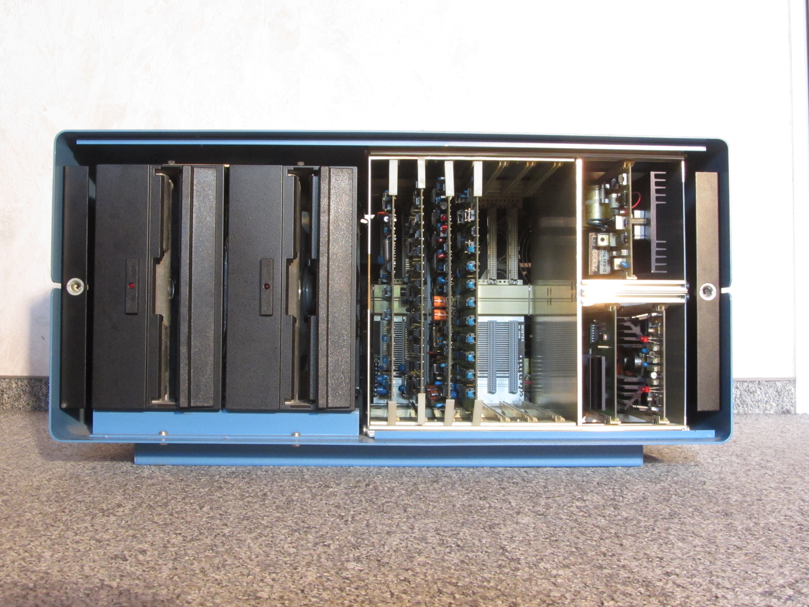
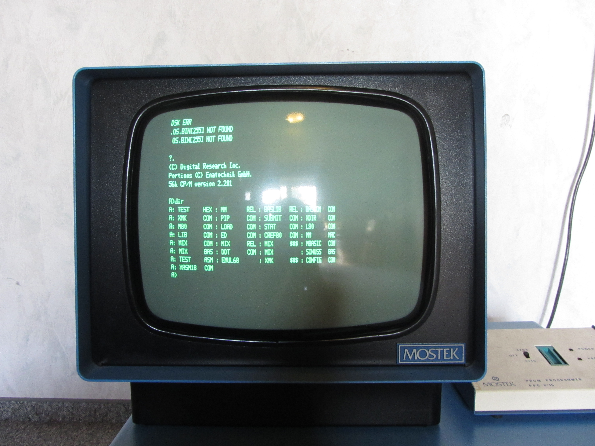
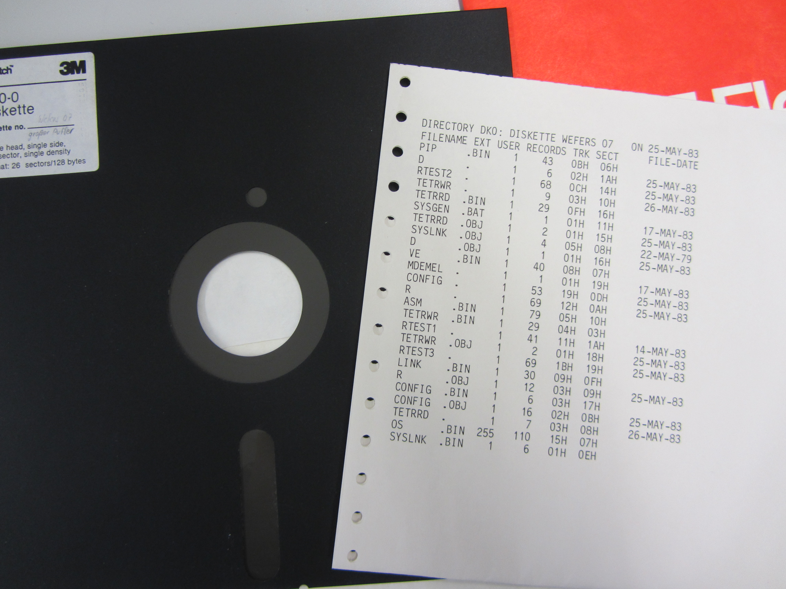
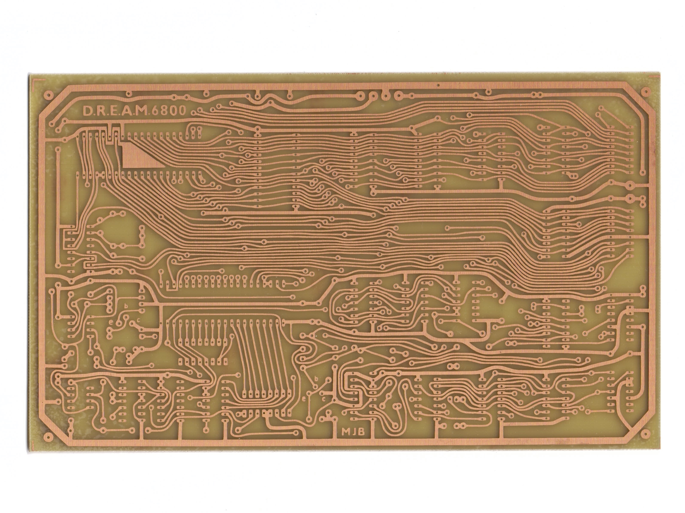
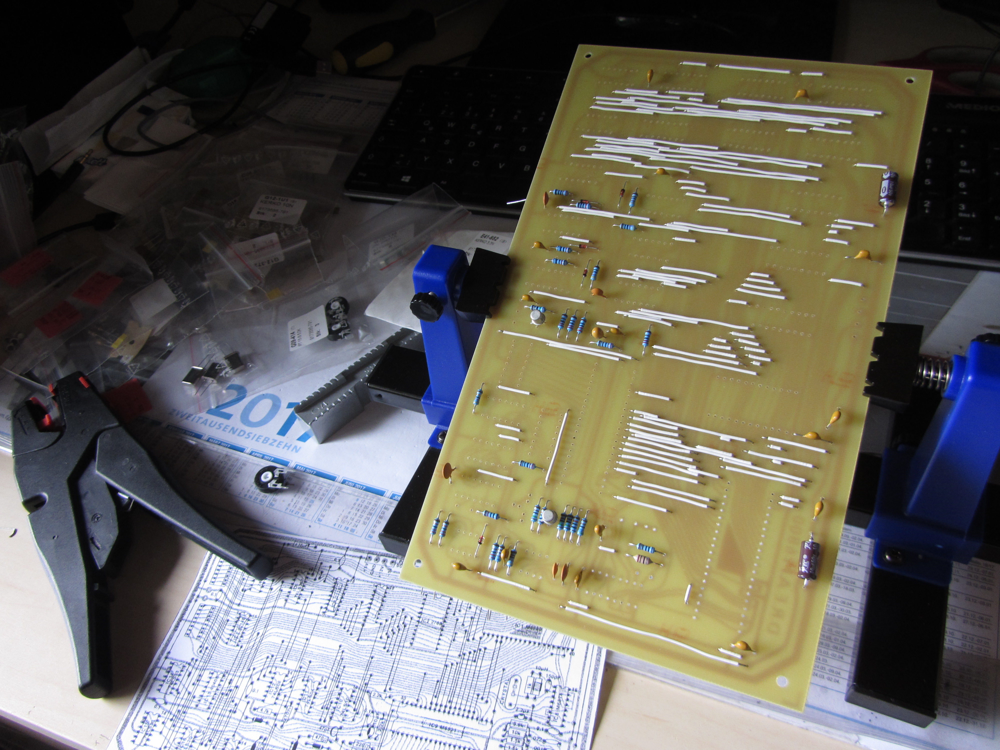
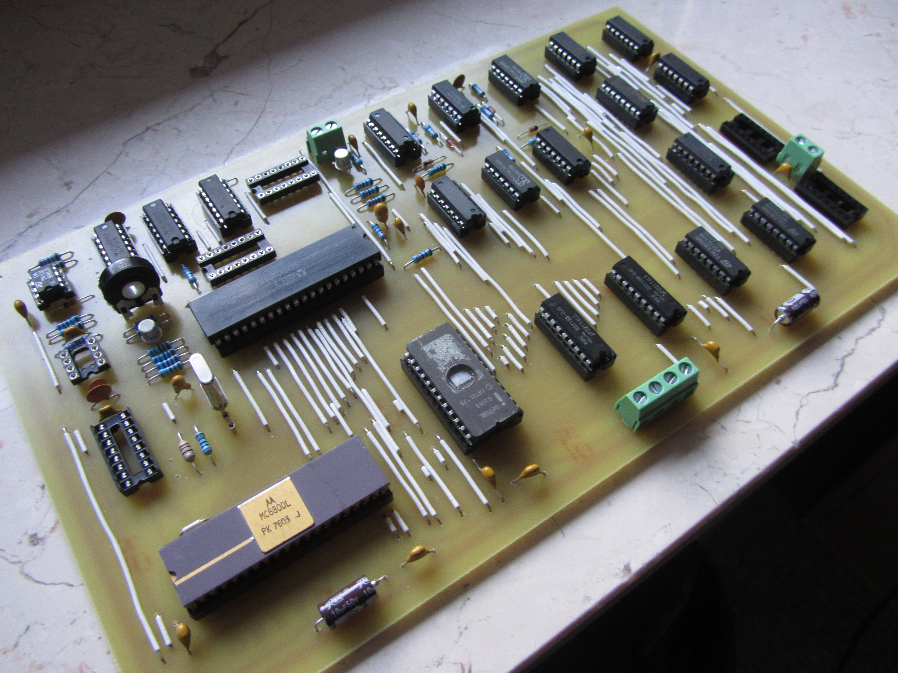
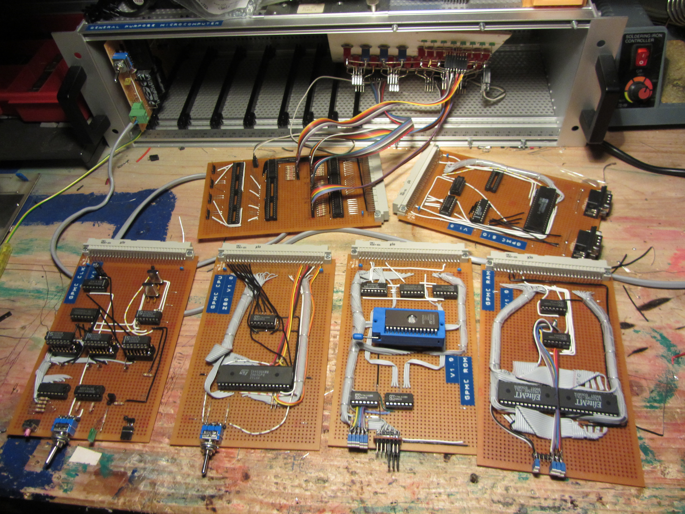
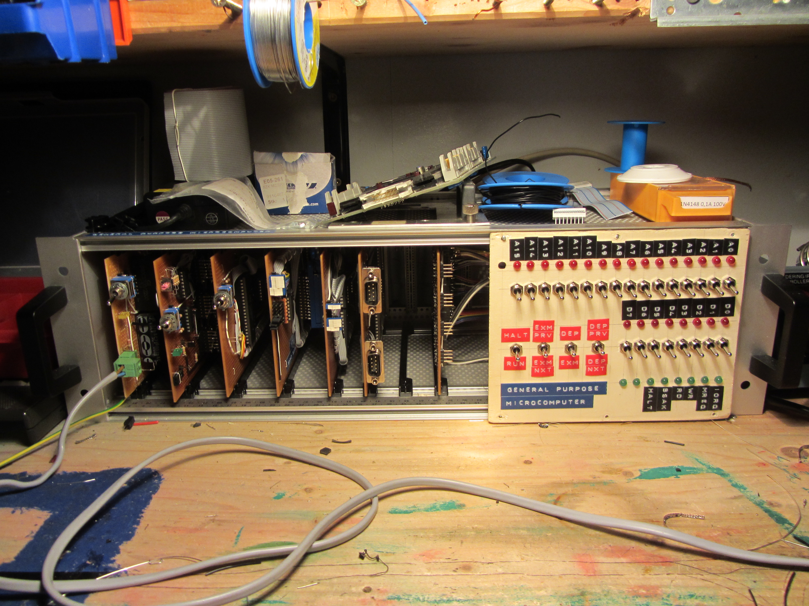
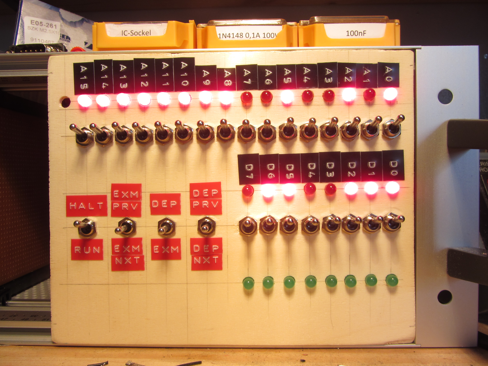

Welcome to my Project Page
On this Page I will present some of my Projects I have been working on or am currently working on.
Project List:
Reviving a rare Mostek Computer System from 1979 running CP/M



Recreating the D.R.E.A.M. 6800 Single Board Computer from 1979



The GPMC - Building my "own" Z80 Computer (Based on the RC2014)


